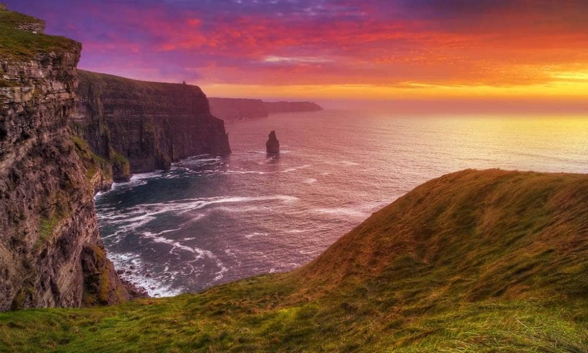
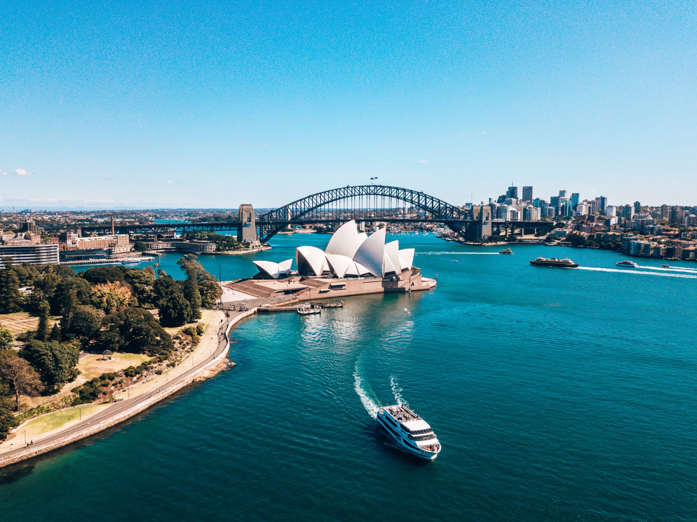
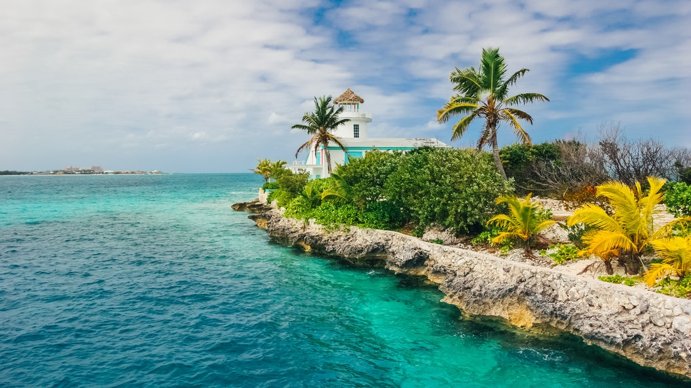
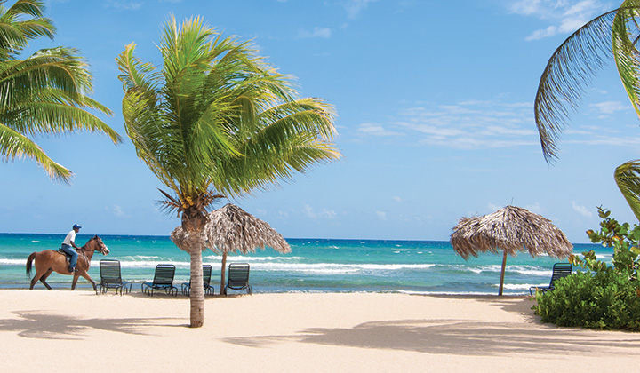

| Places I Want To Go |
| Ireland |
 |
Ireland is an island in the North Atlantic. It is separated from Great Britain to its east by the North Channel, the Irish Sea, and St George's Channel. |
| Australia |
 |
Australia, officially the Commonwealth of Australia, is a sovereign country
comprising the mainland of the Australian continent,
the island of Tasmania, and numerous smaller islands.
It is the largest country in Oceania and the world's sixth-largest country by total area. |
| England |
 |
England is a country that is part of the United Kingdom.[5][6][7] It shares land borders with Wales to the west and Scotland to the north. |
| Bahamas |
 |
The Bahamas is a coral-based archipelago in the Atlantic Ocean.
Its 700-plus islands and cays range from uninhabited to packed with resorts. |
| Jamaica |
 |
Jamaica is an island country situated in the Caribbean Sea. Spanning 10,990 square kilometres
in area, it is the third-largest island of the Greater Antilles
and the Caribbean (after Cuba and Hispaniola). |